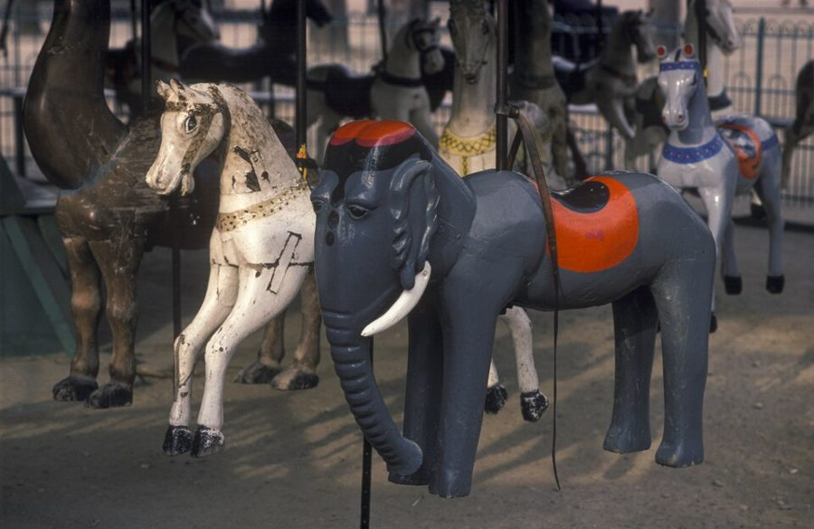
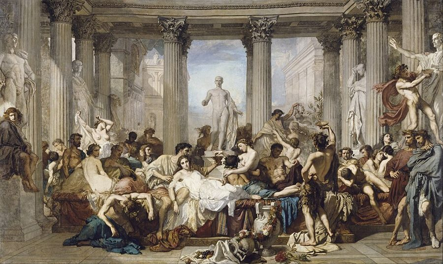
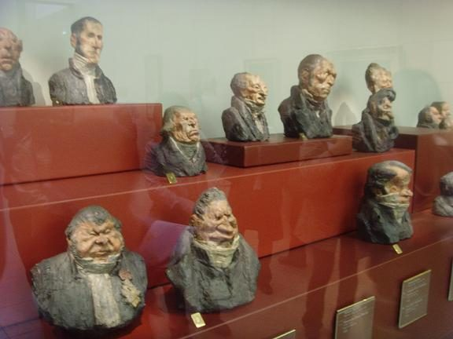

这一篇在做什么
这是作者的第二篇圣诞日记：写给自己的笔记，不是专栏，由十五个短条拼成，记的是一家人在巴黎第二年前后的日常。开头是家里那台国营传真机：不管哪里出了毛病，屏幕上永远显示「远方的错误」。作者拿这句话去看法国的知识分子，又掉过头来看美国人；中间夹着圣诞树、万圣节、旋转木马、事实核查、电影字幕、奥赛博物馆和咖啡馆里的弹子机。读的时候抓两条线：两国人各自怎样犯「远方的错误」，以及作者说的「小店」和「大楼」。
王宫花园（Jardin du Palais-Royal），2009 年。§2 里 Martha 在这里看儿子把花园的小门开了又关，背景是一排排紫色的花。LPLT，CC BY-SA 3.0，维基共享资源
读之前：这篇的来历
这篇不是专栏随笔，按第 1 篇导言的说法，是作者每年圣诞写给自己的日记；第 1 篇导言说，这些日记比随笔更沉思，甚至更悲观。它没有标年份，文中的线索也不统一：§2 说「来了一年」、儿子两岁，§9 说「说了两年法语」，§15 说儿子三岁；§5 说万圣节「今年第一次」来到巴黎，而法国的万圣节热一般认为是 1997 年秋天开始的。看来是跨着一年多陆续记下的。它在第二部分中间，这一部分就借这篇日记的题目，叫「远方的错误」；前一篇写圣日耳曼的两家咖啡馆，后一篇是 Papon 审判的长篇报道。
法国人觉得错都在别处，美国人觉得两国之间根本没有隔阂。那两国之间到底隔着什么？作者自己站在哪里？
读的时候带着这几个问题。不用先找答案，读完回来对照「检查一下理解」。
「远方的错误」被作者拿来形容哪些人？到了后面，他又给美国人找了一个什么毛病？两种毛病是一回事吗？§1 §10
作者说搬到巴黎「一切都美好」，移民到法国「一切都难」。这两种说法差在哪里？§2 §12
作者编了一个「理论核查员」。这个比方是在笑法国人，笑美国人，还是两边都笑？§8
替他们挑画框的老太太，悄悄摆好椅子的咖啡馆，是同一种法国还是两种？§12 §15
这一篇的路线
十五个短条没有一个贯穿到底的故事，读译本时容易觉得一条一个话题，东一榔头西一棒子。其实有几条线反复出现：开头传真机的「远方的错误」到 §10、§11 又回来；语言从 §8 起越来越重；美国的东西和美国人一再闯进巴黎；儿子在将近一半的短条里出场。第一次坐下（§1–§8）多是比较和议论，第二次坐下（§9–§15）从语言收拢到几个小场面，最长的 §14–§15 是落点。下面这张图标出每条线出现在哪几条里。
第一次坐下
第二次坐下
1
2
3
4
5
6
7
8
9
10
11
12
13
14
15
远方的错误
语言
美国的东西
小店与大楼
孩子
本站示意图。上面一排数字是短条的节号；每一行是一条反复出现的线，圆点标出它在哪几条里出现；竖的虚线是两次坐下的分界。§3、§4 的圣诞树和彩灯自成一组，没有归进这几条线。 作者落在哪： 两边各有各的错觉：法国人觉得错都在远方，美国人觉得根本没有距离，误会只因英语喊得不够响。作者认为真正分开两国的是语言，差异小而真实。让他气恼的多是「大楼」里的官方文化，打动他的在小店：咖啡馆悄悄给他儿子摆好的那把椅子。
分节地图
原书这一篇有十四处分隔，分成十五个短条，近 7000 词，这里分成两次坐下读。每一节的粗体是读译本时认得出的场面；下面的斜体是英文这一节开头的几个词，打开电子书搜它就能跳到那里。读完一节打个勾。
第一次坐下§1–§8 · 约 3600 词 · 从传真机说起，一路比较法国和美国，到事实核查为止
国营传真机，电视辩论，电台座谈约 900 词 My fax machine, which was made … 全篇的题目从这里来。留意作者恼的到底是反美，还是别的。 老画家的警告，王宫花园的小门约 500 词 A wise man, an old émigré artist … 侨居者的孤独和自由。「远方的错误」第一次反过来落到自己头上。 圣诞树脚上钉的木十字约 400 词 After a first winter in Paris … 一件小东西，两种解释，最后拐到宗教上。 打了死结的圣诞彩灯约 100 词 Naturally none of the Christmas tree garlands … 一段玩笑：什么是文化差异，什么是人类共性。 万圣节第一次来到巴黎约 400 词 The American Christmas came to Paris … 法国人看万圣节的别扭，作者替美国人的「解释」要反着读。 卢森堡公园的木马和 Roth 的游记约 300 词 Luke has mounted up onto the horses … 七十多年没变的游戏，只少了一样东西。 纽约那种午饭，巴黎没有约 200 词 The differences are tiny and real … 「差不多又不完全一样」最折磨人。 受访者听说要「核查事实」约 800 词 My favorite bit of evidence of … 一段对话加一个反过来的设想，看作者怎样把笑话翻到美国人身上。 第二次坐下§9–§15 · 约 3100 词 · 从语言这道墙，收到几个小场面和一把椅子
63 路公交上问路的美国游客约 500 词 “Does this bus go across the … 全篇最直白的判断在这一节末尾。 国庆焰火下指挥人群的美国女士约 300 词 Yet there is a kind of authority … 末尾两句把法国人和美国人的毛病并排放。 电影字幕里的 Al 和「脏的 Jesse」约 300 词 It is, still, amazing to see … 两个字幕笑话，说的是语言这道半透明的屏风。 想掐人的时刻；BHV 的老太太挑画框约 500 词 There are at least three moments … 作者承认毛病在自己；接着是一次彻底的无能为力。 Bon Marché 的送货员清早轻轻敲门约 200 词 The other side of French official arrogance … 傲慢的另一面：前一晚的强硬和第二天的体贴。 奥赛博物馆让作者气得发抖约 500 词 And then there is the chair … 开头说「椅子」，却先发了一大通火。「文明」和「官方文化」在这里定义。 Daumier 的胸像，咖啡馆的弹子机约 900 词 In any case, I couldn’t … 椅子终于出现。全篇最后一个小场面。
背景：作者默认你知道的事
按在书里出现的顺序排，标题前是节号。
§1 国家造的传真机France Télécom 当时是法国国营的电信公司。作者的这台 Galéo 5000 是它出品的，所以他说这是「官方产品」，连买色带都得去国营的电话营业厅。屏幕上那句 erreur distante，在法文的通信用语里，distant 多指线路「对方那一端」，这条提示大致是说对方机器出了错。作者故意按字面读成「错在远方」，从一台机器的提示读出一个民族的脾气，半是玩笑，半是认真。
斯塔克 Philippe Starck 法国设计师，1949 年生，设计过从家具、灯具到榨汁器的各种东西。作者拿他的名字形容法国产品那种流线型的聪明样子。
§1 电视上的托德，电台里的索莱尔斯托德（Emmanuel Todd）那本谈发达国家经济「停滞」的书，应是 1998 年出版的《经济幻觉》（L'Illusion économique），副题就是「论发达社会的停滞」。和他辩论的经济学家，书里只写了姓 Cohen，本站不猜是谁。索莱尔斯（Philippe Sollers）是那次电台座谈的座上客。France-Culture 是法国国家电台的文化频道；巴黎政治学院（Sciences Po）是培养法国政界和行政精英的名校。作者列举的那些陈词滥调，比如「抽象表现主义是 CIA 捧红的」，在他看来是一种不肯自省的方便说法。
索莱尔斯，1993 年在巴黎。§1 说作者和他在电台里认真争论过 Roth 和 Updike。Guiness88，CC BY-SA 4.0，维基共享资源
托德 Emmanuel Todd 法国历史学家、人口学家，1951 年生，1976 年出书预言苏联会解体。书里称他经济学家。§1 里他在电视上说美国经济和法国一样停滞，甚至更糟。
索莱尔斯 Philippe Sollers 法国小说家、评论家，1960 年创办文学刊物《原样》（Tel Quel），2023 年去世。
艾斯纳 Michael Eisner 1984 到 2005 年执掌迪士尼公司。作者说自己在座谈会上被当成他的代表。
科尔比 William Colby 1973 到 1976 年任美国中央情报局（CIA）局长。和艾斯纳并提，凑成「迪士尼加 CIA」的阴谋论。
§2 流亡者的名单和《鸭鸣报》老画家那句话背后，是犹太人长久的迁徙和流亡史。作者随口列出的三个名字是对照：本雅明（Walter Benjamin）和策兰（Paul Celan）是犹太人，萧沆（E. M. Cioran）不是，但三人都离开故国，在巴黎过过流亡的日子，和「带着孩子搬去巴黎」完全不是一回事。《鸭鸣报》（Le Canard enchaîné）是 1915 年创刊的讽刺周报，每周三出版，以揭政界的底和文字游戏出名，外国人要读懂它的笑话，得先熟悉法国政坛的人和事。
萧沆 E. M. Cioran 罗马尼亚出生的思想家，1937 年起住在巴黎，后来改用法文写作，文字以悲观著称。§12 作者又引了他一句。
本雅明 Walter Benjamin 德国犹太批评家，1933 年流亡巴黎，1940 年逃离法国途中在西班牙边境自杀。
策兰 Paul Celan 生于切尔诺维茨（今属乌克兰）的犹太诗人，用德语写作，战后定居巴黎，1970 年投塞纳河自尽。
§5 万圣节和诸圣节法国传统里，11 月 1 日是诸圣节（Toussaint），人们去墓地给亲人献菊花，是个肃穆的日子。所以孩子扮成骷髅鬼怪上门讨糖，在法国人看来格外别扭。万圣节是 1990 年代后期由商家在法国推起来的，后来怎样见「后来」。Linus 是漫画《花生》（Peanuts）里的人物，1966 年的电视特别节目里，他整夜守在南瓜地里，等一个从来不来的「南瓜大王」。
§6 卢森堡公园的套圈木马卢森堡公园的老旋转木马，当时还玩套圈：管理员在转台边挂上小铁环，骑在外圈的大孩子拿木棍去套。第 4 篇写过这座木马，那时儿子太小，只能坐在小车里看大孩子套圈，作者还说这游戏没有奖品。「决定性瞬间」是摄影家卡蒂埃-布列松（Henri Cartier-Bresson）的说法，来自他 1952 年的摄影集，英文版就叫 The Decisive Moment。作者由 Roth 那句「瞬间的价值」，半开玩笑地想象这些摄影师小时候都在木马上练过。

卢森堡公园的旋转木马，1980 年前后。漆皮剥落的木马和大象，和第 4 篇里作者描写的样子很像。Maeder, Herbert, 1930–2017，CC BY-SA 4.0，维基共享资源
约瑟夫·罗特 Joseph Roth 1894–1939，生在奥匈帝国的加利西亚，用德语写作，一般称奥地利作家，代表作《拉德茨基进行曲》。书里叫他 German novelist。1925 年他作为《法兰克福报》的记者到法国写报道。
卡蒂埃-布列松 Henri Cartier-Bresson 1908–2004，法国摄影家，以街头抓拍出名。第 1 篇说作者小时候家里茶几上就有他的摄影集。
§8 《纽约客》的事实核查《纽约客》以核查严格出名：文章发表前，核查员会打电话给受访者，逐条核对引语、日期和事实。作者说法文里似乎找不到简单的对应说法，只好夹着英文说。他把这种对事实的执着叫做实证主义（positivism）的最后据点；实证主义是哲学用语，大意是只承认能用经验验证的知识。他设想的两位美国受访者：Al Gore 当时是美国副总统，Giuliani 是纽约市长。
§9 「调节子」：第 4 篇的典故Regulon（本站译「调节子」）和「符号圈」（Semiosphere）出自第 4 篇。作者在法国哲学家 Baudrillard 的研讨班上，听一位经济学家说自然界一定有个他命名为 Regulon 的原理，让生物不至于无限繁殖；Baudrillard 接着断言「符号圈里没有调节子」：电视电影的影像没有天敌，会无限扩散。第 4 篇后面作者反驳说，插头就是调节子，鱼也是，各国永远不一样。这一节接着说：比插头和鱼更厉害的，是语言。
§11 《皇家婚礼》和三位脱口秀主持人《皇家婚礼》（Royal Wedding）是 1951 年米高梅的歌舞片，Fred Astaire 主演，丘吉尔的女儿 Sarah Churchill 演他在伦敦爱上的舞者。她在片中的角色叫 Anne，书里写成 Patricia，大概是作者记错了。Hal 是 Henry 的昵称，莎士比亚笔下的哈尔王子就叫这个，作者说它像体面的英国名字；Al 则是寻常人家的叫法。Oprah Winfrey、Geraldo Rivera、Sally Jessy Raphael 都是当时美国的日间脱口秀主持人，Sally Jessy 以一副红框眼镜为标志。
§12 BHV 和 Bon MarchéBHV 是「市政厅百货」（Bazar de l'Hôtel de Ville）的缩写，在右岸的里沃利街，正对巴黎市政厅，以五金和自己动手的楼层出名；第 4 篇作者也写过它。Bon Marché 在左岸，19 世纪中叶发展成百货公司，常被称为最早的现代百货公司之一；第 4 篇作者为了圣诞彩灯，在那里来回跑了三趟。§12 要裱的版画，就是第 1 篇开头那张开往月球的火车。
BHV 的转角立面，2015 年。招牌上的店名这时已改作 Le BHV Marais，竖幅上的 SOLDES 是「打折」。GFreihalter，CC BY-SA 3.0，维基共享资源
§14 奥赛博物馆、「消防员艺术」和 Daumier 的胸像奥赛博物馆由 1900 年建成的奥赛火车站改建，1986 年 12 月开馆。此前印象派的画放在杜伊勒里花园的网球场美术馆（Jeu de Paume），搬进奥赛后放在了高层。中央大厅两侧是十九世纪学院派的官方沙龙艺术，法文贬称「消防员艺术」（art pompier）。作者对奥赛的火气是他一个人的看法，书里自己也承认是暴脾气。§15 的 Daumier 胸像是 1830 年代讽刺议员的一组彩绘泥塑，作者说它们和今天的法国政客一模一样。
奥赛博物馆的中央大厅，2023 年。尽头的大钟是火车站留下来的。作者说这座大厅里摆着的正是他最受不了的那类艺术。Daniel Lu（User:dllu），CC BY-SA 4.0，维基共享资源

Couture《颓废的罗马人》，1847 年，藏奥赛博物馆。§14 作者说他愿意毫不犹豫地拿刀片去划这幅画，是气话。Thomas Couture，公有领域，维基共享资源 
Daumier 的彩绘泥塑胸像，约 1832 年，奥赛博物馆展柜，2008 年拍摄。§15 父子俩隔着玻璃一个个猜：谁凶、谁好、谁自大。Homonihilis，CC BY-SA 3.0，维基共享资源
比利·马丁 Billy Martin 美国纽约洋基棒球队的经理，以火爆脾气出名，被老板解雇又请回来好几次。§14 作者自称「法国的比利·马丁」。
奥伦蒂 Gae Aulenti 意大利建筑师、设计师，1927–2012，主持了奥赛博物馆的室内改造。
库蒂尔 Thomas Couture 1815–1879，学院派画家，《颓废的罗马人》在 1847 年的沙龙展出，大获成功。
杜米埃 Honoré Daumier 1808–1879，讽刺画家、版画家，一生画政客和法官，也画巴黎的普通人。
塞甘 Philippe Séguin 戴高乐派政治人物，1993 到 1997 年任国民议会议长。
勒庞 Jean-Marie Le Pen 极右翼政党国民阵线（Front National）的创始人和党首。
梅格雷 Bruno Mégret 当时国民阵线的二号人物，1998 年底和勒庞决裂，另立政党。
若斯潘 Lionel Jospin 社会党人，1997 年起任总理。作者说左派的面孔在胸像里也找得到。
词与短语
只收中文译文多半传不出原味的地方：熟词生义、反话和挖苦、典故、夹在英文里的法文。读译本读到觉得别扭、不知道作者在说什么时，来这里找那一节的；斜体小字是原句里的几个英文词，在电子书里搜它就能找到原文。
§1 国营传真机，电视辩论，电台座谈
fax machine ministry
… by the French fax machine ministry.
法国传真机部
法国并没有这个部。作者从型号 Galéo 5000 编出笑话：好像先试了 4999 个型号，终于由一个专管传真机的部门做到完美。挖苦法国事事归国家管。
affiche
… where it affiches, or posts, the events …
（法文）张贴、显示
afficher 是贴告示，也指屏幕上显示。作者把它当英文动词用（affiches、affiched），全篇反复出现：传真机「贴出」错误，知识分子也「贴出」结论，不管对方说什么。
Pas d’identité!
… a shocked, offended Pas d’identité! …
（法文）没有身份！
技术上只是说对方机器没有发来自己的号码。作者却写机器「震惊、受了冒犯」。identité 也是法国人随身带的身份证件那个词，听上去有点像在盘查证件。
erreur distante
… of my fax machine is erreur distante
（法文）对方出错；作者读作「远方的错误」
通信用语里的 distant 多指线路对方那一端（见「背景」）。作者故意按字面读，生出整篇的题目：错永远在别处。
blandly
… He blandly announced that the U.S. …
若无其事地、理所当然地
bland 在这里不是「平淡」，是不动声色、不当回事。作者反复用这个词：下文的 bland certainty 说的也是这种不加思索的笃定，正是他受不了的；§2 写鬼魂 blandly encouraging，口气就轻松多了。
looked terrific
… Todd, who looked terrific, hardly bothered …
派头十足
作者特意写两人的样子：讲道理的 Cohen 穿得很糟，只会重复断言的托德派头十足，主持人还被唬得直点头。言下之意多半是：这档节目里赢的是派头，不是论证。
mouse ears
… with mouse ears on my head …
米老鼠耳朵帽
迪士尼乐园卖的那种。作者自嘲在座谈会上被当成迪士尼老板和前 CIA 局长的双重代表：头戴老鼠耳朵，耳朵里大概还装着窃听器。
trotted out
… The clichés get trotted out …
（老一套）又被搬出来
trot out 本指把马牵出来遛给人看，引申为把听腻了的说法再拿出来显摆。
put over
… got put over by the CIA …
被（CIA）捧红、推销出去
put over 是靠手段让人接受。法国人的陈词滥调说，Pollock 那批美国画家是 CIA 包装出来的。作者在这里把它当成偏见来列举。
Astérix-style resistance
… in its Astérix-style resistance to American domination …
阿斯泰利克斯式的抵抗
《阿斯泰利克斯》（Astérix）是 1959 年开始连载的法国漫画，一个高卢小村靠魔法药水顽抗罗马大军。作者说这种反美可以理解，甚至可敬。
change the paper
… for somebody else to change the paper.
等别人来换纸
回到开头的传真机：自己没纸了也报「远方的错误」，坐等别人来添纸。§1 用这个比方收住。
§2 老画家的警告，王宫花园的小门
the essential Jewish experience
… the essential Jewish experience of emigration …
犹太人最根本的那种经历
老画家说得严肃，甚至阴沉（soberly, even darkly）：搬到巴黎，等于终于补上了犹太人流亡异乡这一课。作者当时当成一个复杂的反讽玩笑，一年后承认这话说中了几分。
less Cioran and Benjamin and Celan
… less Cioran and Benjamin and Celan …
没那么「萧沆、本雅明、策兰」
把人名当形容词用（见「背景」）。三人代表真正的流亡；带着婴儿搬去巴黎，离那种流亡差得远。
I brought them with me
… they tell me I brought them with me.
他们说错是我自己带来的
把「远方的错误」翻了个面：轮到自己当外人，人家告诉他，错不在远方，是他随身带来的。
died and gone to heaven
… had died and gone to heaven …
快活得像上了天堂
英文的口头禅，意思是高兴极了。Martha 接着按字面想下去：上天堂也意味着离开，想念留在人间的人。
an act in the Winter Circus
… strikes an act in the Winter Circus …
冬季马戏团里的一个节目
呼应第一部分的名字和第 4 篇写过的冬季马戏团：刚来时，炸弹和罢工都像马戏团的节目，看着有趣。来了一年，这种新鲜感开始褪了。
lofty and Olympian
… to be so lofty and Olympian …
高高在上、超然物外
Olympian 是「奥林匹斯山诸神似的」，跟奥运无关。下一句接着拿希腊诸神开玩笑。
get laid or slug somebody
… down to get laid or slug somebody.
下凡去找人上床，或者揍人
都是粗俗的口语：get laid 是发生性关系，slug 是用拳头揍。连诸神都忍不住要下到凡间选边站，作者用它说自己也做不到超然。
§3 圣诞树脚上钉的木十字
the cross-that-is-to-come
… of the cross-that-is-to-come, of the …
将要到来的十字架
法国卖的圣诞树，树干底下钉着十字形的木脚，没法泡水。圣诞是耶稣降生，十字架是他的受难。作者半开玩笑地把木脚读成天主教的提醒：树已经死了，只有奇迹能让它复活。
§4 打了死结的圣诞彩灯
permanent cultural universals
… the permanent cultural universals are love …
永恒的文化共性
大词小用。用人类学的腔调说「文化共性」，列出来的却是爱孩子，以及彩灯放进柜子就会自己缠成死结。
§5 万圣节第一次来到巴黎
an inflato raft
… like a specter, an inflato raft.
一下子胀起来的充气筏
先说像幽灵升起，马上换成充气救生筏：一拉就鼓起来。说万圣节在巴黎几乎是一夜之间冒出来的。
predictably indignant
… the coming of Halloween, predictably indignant.
不出所料地义愤填膺
predictably 带着讽刺：《世界报》（Le Monde）嗅出这股商业味，照例要愤慨一番。
ends with candy
… everything, even death, ends with candy.
连死亡也以糖果收场
作者替美国人「温和地解释」：万圣节跟死亡无关，是物质主义、是贪心。这是自嘲：拿「贪心」来让人放心，本身就是笑话。
Let’s be amused
… met by the French motto “Let’s be amused.” …
让我们被逗乐吧
本站的理解：have fun 是自己动手去玩，be amused 是坐着让别人逗乐，带点旁观。作者用一对格言概括两种取乐的方式。
all dressed up, with nowhere to go
… all dressed up, with nowhere to go?
打扮停当，却无处可去
化用俗语 all dressed up and nowhere to go：精心准备了却派不上用场。法国孩子穿好了鬼怪衣服，只能在门后干等。
§6 卢森堡公园的木马和 Roth 的游记
decisive moment
… the “decisive moment” photographers rode …
「决定性瞬间」
卡蒂埃-布列松的摄影理念（见「背景」）。Roth 说孩子们学到「瞬间的价值」，作者顺势想象这些摄影师小时候也在木马上套过圈。
§7 纽约那种午饭，巴黎没有
encode
… Cultures don’t really encode things.
编码
符号学的行话：文化把意义「编码」进事物。作者不买这套大理论，说文化只是收进一些东西、漏掉一些东西，比如纽约那种随便吃的午饭。
decreed by the state
… the menu had been decreed by the state.
像是国家下令规定的
夸张的挖苦：各家小馆的菜单几乎一模一样，好像由政府统一颁布。
soup, beautiful soup
… It is soup, beautiful soup, that …
汤啊，美丽的汤
出自《爱丽丝漫游奇境》里假海龟唱的《美丽的汤》。作者想念的是美国那种有豆子、玉米、甚至字母面的汤。
marché biologique
… we buy in the marché biologique …
（法文）有机食品市集
biologique 在法文里是「有机的」，不是「生物学的」。指拉斯帕伊大道（boulevard Raspail）上的有机市集。
the land of the free
… our salute to the land of the free.
向自由的国度致敬
the land of the free 出自美国国歌。拿国歌里的大词说周日晚上的一锅汤和蛋奶冻，故意小题大做。
§8 受访者听说要「核查事实」
une fact checker
… what we call une fact checker in …
一位事实核查员（法文冠词加英文词）
une 是法文的阴性冠词。作者说用阴性，是因为核查员通常是女性；法文里似乎没有现成的说法，只好夹英文。
the last redoubt
… fact checking is the last redoubt …
最后的堡垒
redoubt 是军事上的小堡垒、据点。作者自嘲：《纽约客》的事实核查是实证主义退守的最后据点，所以对方说它是意识形态，也不算全错。
More Here Than Meets the Eye
… there is More Here Than Meets the Eye.
这里面另有文章
俗语 more than meets the eye：事情没有表面那么简单。作者把每个词都大写，像个标题，模仿对方心里那份疑神疑鬼。
checking up on
… They were checking up on you.
在查你的底
check up on someone 是调查某人、看他靠不靠得住。受访者以为杂志在查记者本人；作者先觉得被冒犯，转念又承认对方说得没错。
a theory checker
… that a theory checker would be calling them.
理论核查员
作者编出来的对照：让美国政客接受「理论核查」，查前提和结论接不接得上，他们会和法国人听说「事实核查」一样恼火。
fetishizing
… It’s simply the fetishizing of one term …
把……奉若神明
fetishize 原是拜物，这里指过分抬高一样东西。在法国人看来，美国人把「事实」单拎出来供着，才可笑。这是作者转述的法国看法。
§9 63 路公交上问路的美国游客
some frost in the manner
… would detect some frost in the manner …
态度里带着点冷
frost 在这里不是霜，是冷淡、不客气。轻描淡写：司机明明在顶她，她却听不出来。
Regulon in the Semiosphere
… a Regulon in the Semiosphere stronger even …
符号圈里的调节子
第 4 篇的典故（见「背景」）。后面的 plug（插头）和 fish（鱼）也是第 4 篇说过的。作者说比它们更管用的「天敌」是语言。
English-speaking imperium
… an English-speaking imperium now stretches …
英语帝国
imperium 是拉丁词，指帝国的统治权，第 1 篇导言也用过这个说法。作者说人们讲的全球化，其实是这个英语帝国的扩张。
§10 国庆焰火下指挥人群的美国女士
designated bacchanal
… it is a designated bacchanal, like …
划定了的狂欢场
bacchanal 是酒神节式的狂欢。作者说法国常常这样：划出一块地方可以乱来，就像卢森堡公园的儿童游乐场。
flics, gendarmes
… there were flics, gendarmes, busy arresting …
（法文）条子、宪兵
flic 是口语里的「警察」，略带不敬；gendarme 是宪兵。
there was a real crime
… now, there was a real crime …
这才叫真犯罪
反话。人群乱成一团没人管，警察倒在忙着抓卖荧光项链的小贩。
Dalton or Brearley
… phys ed instructor at Dalton or Brearley …
道尔顿或布里尔利（纽约私校）
曼哈顿两所老牌私立学校。作者用它描画那位女士：东岸上层，精力充沛，爱组织人。
the first to tell you
… would be the first to tell you …
她会抢着告诉你
她自认接地气，而且会抢着告诉你这一点；急着这样标榜，多半恰恰说明她没那么接地气。作者在轻轻挖苦。
spoken English loudly enough
… having spoken English loudly enough.
英语喊得不够大声
挖苦美国人：以为一切误会都只是对方没听懂，把英语喊得再响一点就行。
§11 电影字幕里的 Al 和「脏的 Jesse」
Falstaff’s prince
… like Falstaff’s prince, like a good …
福斯塔夫的王子
莎士比亚《亨利四世》里，胖骑士福斯塔夫的酒友哈尔王子（Prince Hal），后来的亨利五世。
Al like a stage-hand
… Al like a stage-hand, Al like …
像个后台杂工的 Al
少了一个 H，这位未婚夫就从王子掉成了后台杂工、作者祖父那一辈人的名字。英文读者听得出的这点身份差别，字幕译者没听出来。
non–non sequitur
… became a non–non sequitur question.
「不是不搭」的问话
non sequitur 是前言不搭后语。作者在前面再加一个 non，玩文字游戏，大概是说：字幕凭空造出一句意思莫名其妙、语法上却像模像样的问话。
et sale est Jesse
… Geraldo—et sale est Jesse? …
（法文）「Jesse 是脏的？」
sale 是「脏」，est 是「是」，连起来读，音近 Sally Jessy。译者不认识这位主持人，只好照着音拼出一句法文。
§12 想掐人的时刻；BHV 的老太太挑画框
sheer bloody-mindedness
… from the rear) from sheer bloody-mindedness.
纯粹存心刁难
bloody-minded 是英式口语，故意跟人作对，不是「嗜血」。
antiqued
… a fake, “antiqued” gold frame.
做旧的
antique 当动词是把新东西做旧。老太太挑的是仿古金框；作者加了引号，点明这「旧」是做出来的。
§13 Bon Marché 的送货员清早轻轻敲门
We know
… They nodded. We know. I signed …
（那意思是）我们知道
原书用斜体：这不是他们说出口的话，是作者替那一下点头配的台词。孩子在睡觉，用不着你说。
§14 奥赛博物馆让作者气得发抖
essays at
… despite my superficial essays at amused blandness …
尝试
essay 在这里是「尝试」，不是文章。作者自嘲：表面上装作若无其事、看什么都觉得好笑，骨子里是个暴脾气。
pepperpot
… I’m a real pepperpot, a hothead …
火爆性子
胡椒罐，一点就冲。后面的 Billy Martin 见「背景」。
pompier
… the worst pompier art of the …
（法文）「消防员」艺术
pompier 本义消防员。art pompier 是对十九世纪学院派官方艺术的贬称；一说是因为这些画里古代英雄的头盔锃亮，像消防员的帽子。
take a razor to
… I would take a razor to …
拿刀片去划
气话，不是真要毁画。后面那幅 The Romans of the Decadence 就是 Couture 的《颓废的罗马人》（见「背景」）。
sends it to its room
… the garret, sends it to its room.
罚它回自己屋里去
家长罚孩子的话 Go to your room!。garret 是阁楼，穷画家住的地方：官方文化把真正的好画「罚」到了顶楼。
wild with gratitude
… you are not wild with gratitude for …
感激得不得了
wild 在这里是情绪激动得收不住，后面又对称地用了 wild with dismay（气得不得了）。
official culture
… and French official culture, which is …
官方文化
作者自己的一对概念：「法国文明」是法国生活里积累下来的聪明和风趣，「官方文化」是官僚体系的浮夸和抽象。
§15 Daumier 的胸像，咖啡馆的弹子机
haut
… the nearest thing our haut neighborhood has …
（法文）高档的
haut 本义是「高」。用一个法文词说自家街区高档，带点自嘲：附近连一家像样的工人咖啡馆都难找。
flipper
… a flipper, as it is called …
（法文）弹子机
法文管整台弹子机叫 flipper，英文的 flipper 只是那两片挡板。作者接着让儿子管左边的 flipper，两种意思都用上了。
clockwork nightingale
… the clockwork nightingale mechanicalness of the …
发条夜莺
安徒生童话《夜莺》里，皇帝得到一只上发条的人造夜莺。作者喜欢弹子机的，正是这种老式的机械感。
paying protection
… and I am paying protection.
交保护费
黑帮收的那种保护费。玩笑：作者「确信」三岁孩子打弹子是违法的，那十法郎小费就算封口钱。
grudging courtesy
… almost a grudging courtesy, offered to …
不动声色、近乎勉强的礼数
grudging 是不情不愿。这份礼数不笑、不说破；全篇就停在这把椅子上。
a short client
… offered to a short client who …
一位个子矮的主顾
client 是正式的「顾客」，short 是个子矮。一本正经地把三岁孩子说成常来的主顾。
后来
这一篇记下了法国万圣节热的开头。下面接着讲它后来怎样。核对日期写在后面，这类内容过几年就会变。
万圣节在法国：来得快，退得也快
1997 年 10 月底，《纽约时报》报道巴黎特罗卡德罗广场摆出了八千多个南瓜，说一年前法国人几乎不知道这个节日。这些南瓜是法国电信（France Télécom）为推销一款手机摆的，也就是 §1 那台传真机的出品方。热潮在 2000 年代初到顶，之后明显降温，2006 年《世界报》说它「几乎被埋葬」，常见的解释有太商业、太血腥、和法国人的期待不合；2008 年前后起，服装和糖果的销售又有回升。核对于 2026-10。依据：《纽约时报》1997 年 10 月 31 日报道，《世界报》2006 年 10 月 31 日报道，《观点》周刊 2011 年 10 月 31 日报道，France Culture 2018 年 10 月 31 日节目。
值得停下来的句子
The French believe that all errors are distant … Americans believe that there is no distance, no difference, and therefore that there are no errors— §10 末尾，全篇的题目在这里收拢。本站译：法国人相信错都在远方……美国人相信没有距离、没有差别，所以也就没有错。
两句话对着写：法国人那句的关键词是 distant，美国人那句是 distance。同一个词根，一个说错离得远，一个说根本没有远近，两种毛病就这样对上了。中文的「远方」和「距离」看不出是一个词变来的，这层对仗就丢了。还有 therefore：用逻辑词把一个想当然的推论说得理直气壮，挖苦就藏在这里。
We breathe in our first language, and swim in our second.— §9 末尾，说完语言才是真正的分界之后。本站译：我们在母语里呼吸，在第二语言里游泳。
两个动词都短，都跟着 in：语言像空气和水一样把人整个裹住。呼吸不用想，游泳要用力，会累，要时时记得换气，还可能呛水。first 和 second 只是第一、第二，中文译成「母语」「第二语言」就不那么对称了。作者刚说完自己天天讲法语讲了两年，这句话说的是他自己。
检查一下理解
先在心里答，再点开。答错的那题，回书里把对应那一节再读一遍。
1.（§1）传真机为什么总显示「远方的错误」？作者拿它形容什么人、什么习惯？ 不管错出在对方还是自己（没纸、没擦色带），屏幕都显示同一句。作者说一些法国知识分子和公众人物也这样，论据用完了就把错推到别处，比如在电视上把经济停滞算到美国头上。他说让他恼火的不是反美，是那种不加反省的笃定。
2.（§2）作者怎样区分「搬到巴黎」和「移民到法国」？ 书里没有细说，本站的理解：前者是在这座城市里过日子，一切美好；后者是成为外人，处处碰壁，一切都难。他还说侨居的孤独和自由分不开：没了本能的立场，看法国政客辩论，觉得谁都有点道理。
3.（§3）圣诞树脚的木十字，书里给了几种解释？ 卖树的人说它封住树干，保住树液；美国人相信切口泡水能让树保鲜。作者又半开玩笑地说，木十字也许是天主教的提醒：树已经死了，只有奇迹能让它复活。两边的说法他都打了问号，是逻辑还是幻想。
4.（§8）作者为什么要编出一个「理论核查员」？ 让美国读者体会法国人的反应：美国人会觉得单把「理论」拎出来核查很荒唐，因为人说话时用的理论随时在变；在法国人看来，单把「事实」拎出来核查也一样荒唐。作者先恼法国人，最后把笑话也翻到了美国人身上。
5.（§9 §10）作者说法国真正的危机是什么？美国人又犯了什么「错」？ 不是经济也不是文化，那些是周期性的，会过去；是法语作为国际语言衰落了，这个不会过去。美国人的错是以为根本没有距离和差别，一切误会只因为英语说得不够大声。
6.（§13）Bon Marché 的送货员前一晚口气强硬，第二天早上怎样？作者想说什么？ 他们清早来，敲门轻得像鬼魂，知道孩子在睡觉，一声不响地把东西搬进来就走。作者说，法国官方式傲慢的另一面，是即兴而周到的礼数。
7.（§14 §15）「法国文明」和「官方文化」各指什么？那把椅子算哪一边？ 前者是法国生活里积累的聪明和风趣，后者是官僚体系的浮夸和抽象；作者说，大概前者就是小店，后者就是大楼。咖啡馆塞在弹子机下的那把小椅子属于前者：不说破、不讨好的礼数。
用一句话说这一篇，写给一个没读过的人。
精彩回顾
读过又忘了，从这里想起来。挑的是这一篇最值得记住的场面和说法，不按原书顺序；每条后面是节号，想细看就回书里那一节。全书各篇的这一节都收在全书回顾 。
一句话： 法国人觉得错都在别处，美国人觉得没有隔阂；作者夹在中间，看到的是语言这道墙，和咖啡馆里一把悄悄摆好的小椅子。
弹子机下的小椅子 作者每周带儿子去咖啡馆打一次弹子。几周后，有人悄悄把一把小椅子塞在机器左边，给够不着的孩子踩。没人提，也没人笑，椅子就一直在那儿。
§15 远方的错误 国营传真机不管哪里出毛病，都显示 erreur distante。作者拿它形容一些法国知识分子：没纸、没墨、没论据了，就说错在别处，等别人来换纸。
§1 理论核查员 法国受访者怀疑「事实核查」是意识形态的阴谋。作者设想打电话告诉美国政客「理论核查员会联系您」，对方会一样恼火。
§8 呼吸和游泳 作者说法国真正的危机在语言：全球化其实是英语帝国的扩张。母语像呼吸，第二语言像游泳，讲了两年法语，他还在游。
§9 Hal 变成了 Al 字幕译者听不出英国人名里的 H，整部片子里那位体面的未婚夫成了 Al；Sally Jessy 则被拼成一句「Jesse 是脏的？」。
§11 罚到阁楼 在奥赛，学院派的大画占着正厅，印象派被赶上顶层。作者气得发抖，说巴黎永远是「法国文明」和「官方文化」在打仗。
§14